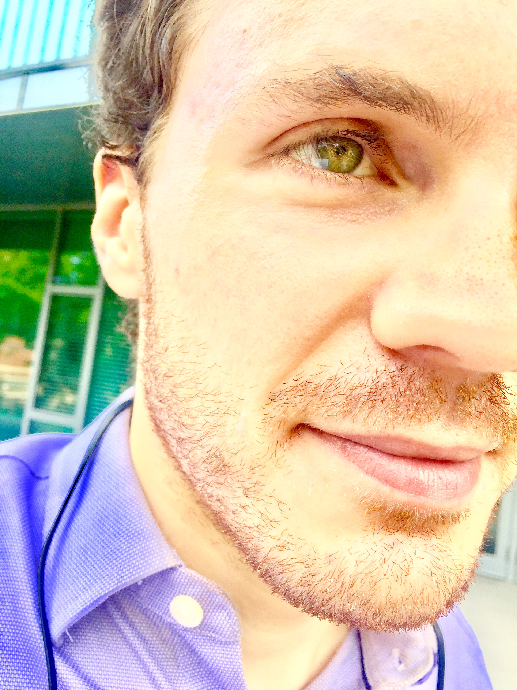

|  |
I am a postdoctoral fellow in mathematics at Tsinghua University, Beijing. Previously, I received my PhD in pure maths at Harvard University. My undergraduate education comprised a BA in pure maths (the mathematical tripos) and an MMath degree (Part III) from Trinity College, Cambridge. My permanent email address is max.menzies at alumni.harvard.edu; my WeChat ID is max-menzies. My Chinese name is 孟思哲。 Please do not send any sensitive communication, such as discussion of exam results, over email (or WeChat). If there is a need for that, there is Signal. |
I am interested in both pure and applied mathematics. In pure maths, I spent my undergraduate and graduate years studying algebraic number theory and arithmetic geometry, particularly p-curvature. In applied maths, my primary collaborator (and best friend of 25 years) is Nick James. We try to work on various topical problems and develop new mathematical techniques to tackle them, with many experiments.
Apart from climate change, nothing is more important than accessibility of research, education, and information. I encourage all academics to submit their work to an open access repository such as arXiv. All my papers can be found on my personal arXiv page.
Human and financial cost of COVID-19, with Nick James, 2020, submitted.
COVID-19 in the United States: Trajectories and second surge behavior, with Nick James, Chaos: An Interdisciplinary Journal of Nonlinear Science, 30, 091102 (2020). This was featured as an editor's pick on the cover of the issue and accompanied by a press release.
Changes to the extreme and erratic behaviour of cryptocurrencies during COVID-19, with Nick James and Jennifer Chan, 2020, submitted.
Cluster-based dual evolution for multivariate time series: Analyzing COVID-19, with Nick James, Chaos: An Interdisciplinary Journal of Nonlinear Science, 30, 061108 (2020). This was featured as an editor's pick and accompanied by a press release.
Clustering volatility regimes for dynamic trading strategies, with Gilad Francis, Nick James and Arjun Prakash, 2020, submitted.
Optimally adaptive Bayesian spectral density estimation, with Nick James, 2020, submitted.
Equivalence relations and L^p distances between time series, with Nick James, 2020, submitted.
Semi-metric portfolio optimisation: a new algorithm reducing simultaneous asset shocks, with Nick James and Jennifer Chan, 2020, submitted.
Novel semi-metrics for multivariate change point analysis and anomaly detection, with Nick James, Lamiae Azizi and Jennifer Chan, Physica D: Nonlinear Phenomena, 412, 132636 (2020).
The p-curvature conjecture for the non-abelian Gauss-Manin connection, 2019, submitted.
Frank Knox Memorial Fellowship, Harvard University, 2013. Home website.
G.F.A Osborn Prize for first in second year mathematics, Trinity College, Cambridge, 2011.
T.G. Room Award for first in Extension 2 mathematics, NSW, 2009. Archived website. It looks like MANSW abandoned their website, but there's some nice history there.
International Mathematical Olympiad silver medal, 2007 and 2008. Historical website.
Teaching Fellow (lecturer) for Math 1b: Calculus, Series, and Differential Equations, Harvard University, spring 2018
Teaching Fellow (lecturer) for Math 21a: Multivariable Calculus, Harvard University, spring 2017
Graduate Calculus Fellow (tutor) for Math 1a: Introduction to Calculus, Harvard University spring 2016
Math Question Center tutor for Math 21b: Linear Algebra and Differential Equations, Harvard University, spring 2015
Mentor, Advanced Mentoring Scheme, UK Mathematics Trust, 2009-2012
Lecturer, Australian IMO Team Selection School, 2009-2011
I passed HSK 4, the Mandarin Chinese equivalent of B2, in December 2019. I am learning quite actively.
Years ago, I finished the Duolingo courses in French and Spanish. I am now out of practice.
Many years ago, I did Latin and Greek in high school. I'm not the only person simultaneously interested in maths and Greek...